Fuzz test results
David Hugh-Jones
2026-05-02
Source:vignettes/articles/fuzz-test-results.Rmd
fuzz-test-results.RmdFuzz tests
Fuzz tests live in tests/testthat/test-fuzz-*. We test
extensively, aiming to cover hard cases and capture a number of relevant
metrics: a single pass generates about 1000 pieces of data. We can’t
always binary pass/fail, so this page is meant to show our current
performance and also how it has evolved over time.
The GPU is 32-bit. MLX has support for float64 but not on the GPU, and Rmlx doesn’t yet support float64 at all. That limits our precision. This page should help us figure out how much that affects performance.
- What about diagnostics?
knitr::opts_chunk$set(echo = TRUE)
library(ggtext)
library(glue)
library(here)
library(tidyverse)
fuzz_theme <- theme_minimal() +
theme(
plot.background = element_rect("grey95"),
axis.text.y.left = element_markdown(),
panel.background = element_rect("white"),
legend.position = "none"
)
set_theme(fuzz_theme)
fuzz <- read_csv(here("tests/testthat/fuzz-results/github-macos-26/fuzz-results.csv"))
chosen_tiers <- if (params$tier == "any") c("full", "fast") else params$tier
latest <- function(fuzz) {
fuzz |>
filter(tier %in% chosen_tiers) |>
filter(branch == "master", datetime_utc == max(datetime_utc))
}
prettify <- function(x) {
stringr::str_to_title(gsub("_", " ", x))
}
fuzz <- fuzz |>
mutate(
agg = replace_values(aggregation, "value" ~ ""),
Target = if_else(agg == "", target, paste0(agg, "(", target, ")")),
Case_type = prettify(case_type),
Scenario = paste(prettify(scenario), paste("n", n), paste("p", p), sep = " / ")
)
date <- Sys.Date()
commit <- system("git rev-parse --short HEAD", intern = TRUE)
branch <- system("git branch --show-current", intern = TRUE)
rmlx_version <- packageVersion("Rmlx")
tier <- latest(fuzz)$tier[1]| Metadata | |
|---|---|
| Generated on | 2026-05-14 |
| Commit | bb9f3a5 |
| Branch | master |
| Rmlx version | 0.3.0.9000 |
| Tier | fast |
History
# lm-det: not sure?
# lm-mc: monte carlo bias and ci coverage with SEs
# glm-det: aic and fitted errors;
# glm-mc: mc bias and ci as for lm-mc;
# glmnet-det: prediction errors
# cv-glmnet: out of fold predictions
# prcomp-det: subspace and reconstruction error
# prcomp-mc: same
history_theme <- theme(panel.grid = element_blank(),
panel.grid.major.y = element_line(
colour = "grey95", linewidth = 0.5))
fuzz |>
filter(suite == "mlxs-lm-monte-carlo", measure == "bias") |>
ggplot(aes(x = datetime_utc, y = value, group = interaction(tier, term), colour = term)) +
geom_pointrange(aes(ymin = value - 1.96 * value_se,
ymax = value + 1.96 * value_se),
position = position_dodge(0.5), size = 0.2) +
geom_line(aes(linetype = tier)) +
facet_grid(rows = vars(Scenario)) +
history_theme## Warning: Removed 5 rows containing missing values or values outside the scale range
## (`geom_segment()`).## Warning: Removed 45 rows containing missing values or values outside the scale range
## (`geom_segment()`).## Warning: Removed 5 rows containing missing values or values outside the scale range
## (`geom_segment()`).## Warning: Removed 45 rows containing missing values or values outside the scale range
## (`geom_segment()`).## `geom_line()`: Each group consists of only one observation.
## ℹ Do you need to adjust the group aesthetic?
## `geom_line()`: Each group consists of only one observation.
## ℹ Do you need to adjust the group aesthetic?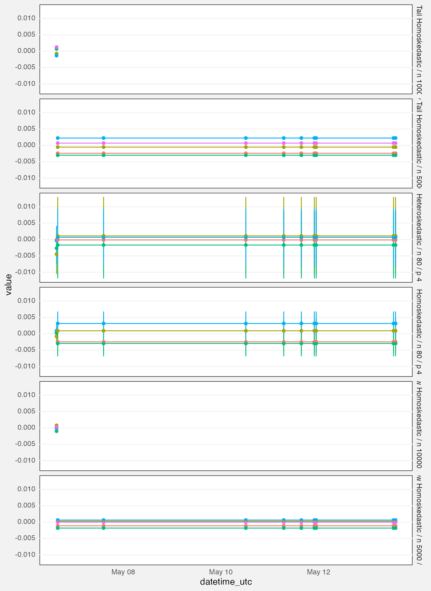
fuzz |>
filter(suite == "mlxs-lm-monte-carlo", measure == "coverage") |>
ggplot(aes(x = datetime_utc, y = value, group = interaction(tier, term), colour = term)) +
geom_hline(yintercept = 0.95, linetype = "dashed", colour = "grey30") +
geom_pointrange(aes(ymin = value - 1.96 * value_se,
ymax = value + 1.96 * value_se), size = 0.2,
position = position_dodge(0.5)) +
geom_line(aes(linetype = tier)) +
facet_grid(rows = vars(Scenario)) +
history_theme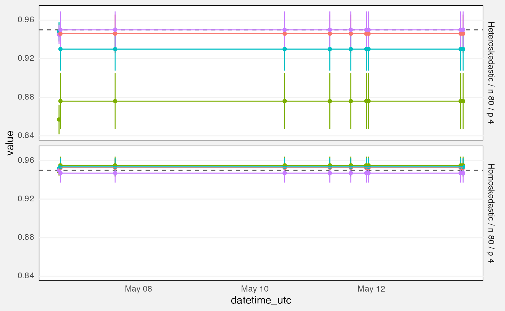
mlxs_lm
Deterministic tests
These tests all measure absolute difference of a statistic with a reference value in different scenarios.
- Longley, Norris and Wamperl are NIST datasets where the reference value was calculated independently.
- The “Epsilon”, “Large N” and “Large P” scenarios compare against
stats::lm.- “Epsilon” refers to near-rank deficient scenarios where one variable is equal to another one plus noise times epsilon
- Maximum errors are taken over all elements of the
vcovmatrix; per-casefittedvalues; or the set ofcoefficients and theirstandard_errors.
fuzz_lm_det <- latest(fuzz) |>
filter(
suite == "mlxs-lm-deterministic",
measure == "error"
) |>
select(-suite, -family, -term, -(nreps:bootstrap_B))
palette("Dark 2")
cols <- palette()[1:6]
names(cols) <- c("max(vcov)", "max(standard_error)", "residual_sigma",
"r_squared", "max(fitted)", "max(coefficient)")
fuzz_lm_det |>
ggplot(aes(y = Target, x = value, color = Target)) +
geom_vline(xintercept = 1e-5, linetype = "dashed") +
geom_point() +
facet_wrap(vars(Case_type, Scenario), axes = "all_x") +
scale_x_log10(labels = scales::label_math(format = log10)) +
scale_color_manual(values = cols) +
scale_y_discrete(labels = \(x) sprintf(
"<span style='color:%s'>%s</span>", cols[x], x)) +
labs(x = "Error (log scale)")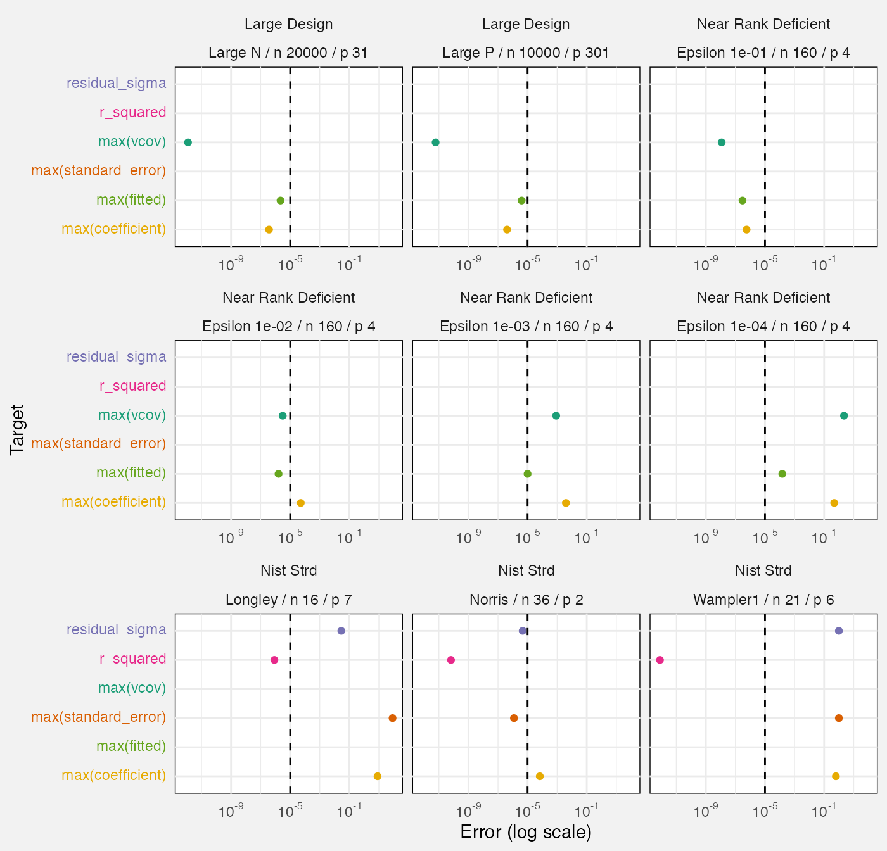
Monte Carlo tests
Bias and confidence interval coverage
We calculate confidence interval coverage over multiple Monte Carlo repetitions as the percentage of times the CI covered the term’s true value. This also lets us generate standard errors, and hence normal-theory 95% confidence intervals for the true confidence interval coverage!
Similarly bias is calculated as over the Monte Carlo repetitions, and we calculate standard errors and confidence intervals the same way.
fuzz_lm_mc <- latest(fuzz) |>
filter(
suite == "mlxs-lm-monte-carlo"
) |>
select(-suite, -family, -(alpha:noise_sd))- We calculate the empirical s.e. as the standard deviation of the estimates over repeated Monte Carlo runs.
- Ratios much above 1 might be worrying. (How much?)
- We have bias stats. Is there a reason we don’t calculate the Monte Carlo s.e.?
- Do we need to record “truth” and “estimate”? Maybe it’s enough to look up the code, on the theory we won’t change these much?
- “truth” is recorded as the baseline both for “estimate” and for “bias”, which is true but in different senses….
- We have a huge N for the very slow bootstrap, and a tiny N for the fast linear model….
- Also, why is the bootstrap so slow?
fuzz_lm_mc |>
filter(measure %in% c("bias", "coverage")) |>
drop_na(value_se) |>
mutate(
Measure = paste0(measure, " (", term, ")"),
value_conf_low = value - 1.96*value_se,
value_conf_hi = value + 1.96*value_se,
ref_line = if_else(measure=="bias", 0, 0.95)
) |>
ggplot(aes(y = term, x = value, xmin = value_conf_low,
xmax = value_conf_hi)) +
geom_vline(aes(xintercept = ref_line), linetype = "dotted",
colour = "grey30") +
geom_pointrange(size = 0.1) +
facet_grid(vars(Scenario), vars(measure), scales = "free_x", axes = "all_x") +
labs(
title = "Bias and 95% confidence interval coverage for Monte Carlo tests",
subtitle = "Lines show Monte Carlo confidence intervals for coverage",
x = "Term", y = "Value"
)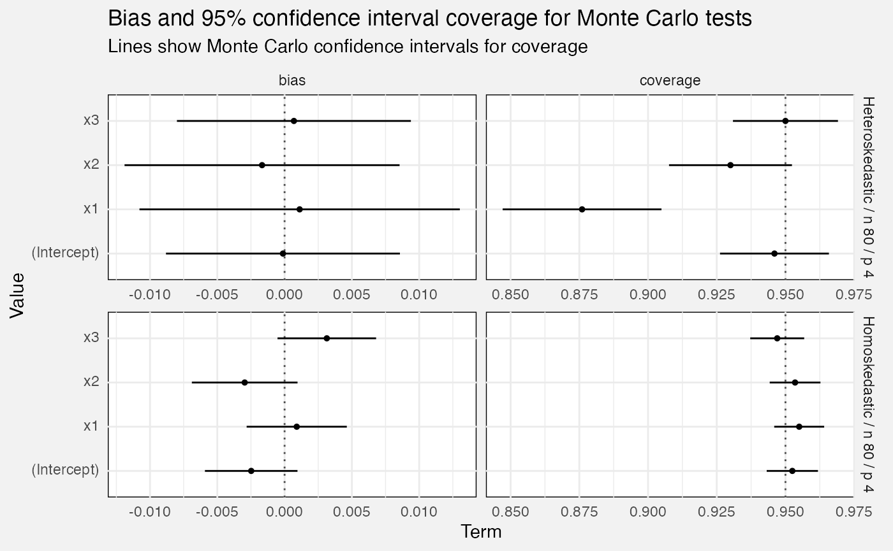
Standard errors
We compare mlxs_lm’s estimated standard errors, either
from bootstrap option or from normal theory, against the empirical
standard error, calculated as the standard deviation of the estimate
over all our Monte Carlo replications.
bootstrap_B <- na.omit(fuzz_lm_mc$bootstrap_B)
stopifnot(n_distinct(bootstrap_B) == 1)
fuzz_lm_mc |>
drop_na(bootstrap_B) |>
filter(measure == "standard_error") |>
mutate(
`s.e. type` = replace_values(source, "model" ~ "normal theory")
) |>
ggplot(aes(y = term, x = value, colour = `s.e. type`)) +
geom_pointrange(aes(xmin = value - 1.96 * value_se, xmax = value + 1.96 * value_se),
position = position_dodge2(0.25)) +
facet_wrap(vars(Scenario)) +
labs(
title = glue("Bootstrap ({bootstrap_B[1]} bootstraps) and normal-theory standard errors with non-normal errors"),
subtitle = paste0("Empirical s.e.s are calculated over multiple Monte Carlo runs.\n",
"Lines are Monte Carlo standard errors x 1.96 of the s.e. itself"),
x = "Coefficient s.e."
) +
theme(
legend.position = "bottom"
)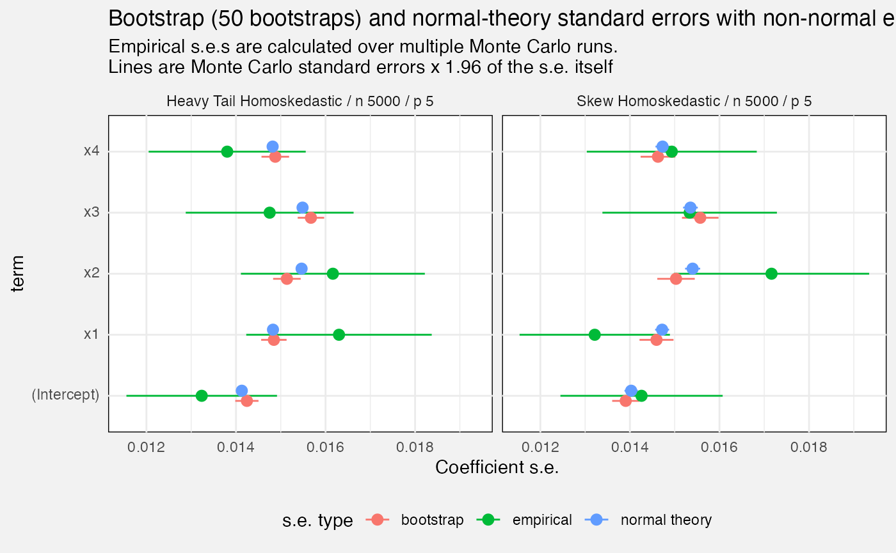
mlxs_glm
Deterministic tests
Here we report absolute differences with the stats:glm
reference value. For scenario details, look at the code in
test-fuzz-glm-det.R.
We test gaussian, Poisson and binomial family functions, but not all families for all scenarios.
The dashed line at is a slightly arbitrary breakpoint. In coefficient and s.e. space we might expect errors to be below this line.
-
case_typejust says deterministic here, different frommlxs_lmwhich is more useful. - The choice of p and n is worth revisiting, maybe Codex has been ducking errors…
fuzz_glm_det <- latest(fuzz) |>
filter(suite == "mlxs-glm-deterministic", measure == "error") |>
select(-suite, -case_type, -(nreps:term))
cols_glm <- palette()[1:6]
names(cols_glm) <- unique(fuzz_glm_det$Target)
fuzz_glm_det |>
ggplot(aes(y = Target, x = value, colour = Target)) +
geom_vline(xintercept = 1e-5, linetype = "dashed", colour = "grey30") +
geom_point() +
facet_grid(rows = vars(Scenario), cols = vars(family),
axes = "all_x") +
scale_x_log10(breaks = 10^c(-9, -5, -1),
labels = scales::label_math(format = log10)) +
scale_color_manual(values = cols_glm) +
scale_y_discrete(labels = \(x) sprintf(
"<span style='color:%s'>%s</span>", cols_glm[x], x)) +
labs(
title = "Errors of mlxs_glm statistics against glm reference",
x = "Error (log scale)"
) +
theme(
strip.text.y = element_text(size = 7, face = "bold")
)
Monte Carlo tests
- And here case_type is just “monte carlo”
- The rmse measure really needs a comparison with
stats::glmto be useful, I think - Is it worth evaluating the standard errors separately from CI coverage? Should have a similar message….
- The “full” test should generate glm bootstrap Monte Carlos….
Bias and confidence interval coverage
fuzz_glm_mc <- latest(fuzz) |>
filter(suite == "mlxs-glm-monte-carlo") |>
select(-suite, -case_type, -(alpha:bootstrap_B))
fuzz_glm_mc |>
drop_na(value_se) |>
mutate(
value_conf_low = value - 1.96 * value_se,
value_conf_hi = value + 1.96 * value_se,
ref_line = if_else(measure == "bias", 0, 0.95),
Measure = prettify(measure),
) |>
ggplot(aes(y = term, x = value, xmin = value_conf_low,
xmax = value_conf_hi)) +
geom_vline(aes(xintercept = ref_line), linetype = "dotted",
colour = "grey30") +
geom_pointrange(size = 0.1) +
facet_grid(vars(Scenario, family), vars(Measure), scales = "free",
axes = "all_x") +
labs(
title = "Bias and 95% confidence interval coverage for Monte Carlo tests",
subtitle = "Lines show Monte Carlo confidence intervals for coverage",
x = "Value", y = "Term"
)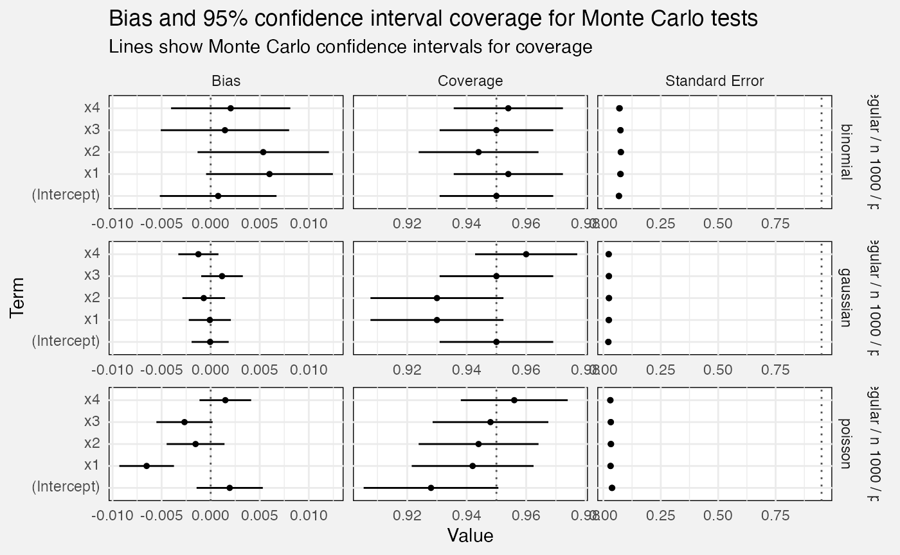
Standard errors
fuzz_glm_mc |>
filter(measure == "standard_error") |>
mutate(
Scenario = paste0(Scenario, " (", family, ")"),
Source = replace_values(source, "model" ~ "normal theory")
) |>
ggplot(aes(y = term, x = value, colour = Source)) +
geom_point(position = position_dodge2(0.5)) +
facet_wrap(vars(Scenario), scales = "free_x", axes = "all_x") +
scale_colour_manual(values = c("bootstrap" = "green3",
"normal theory" = "orange2", "empirical" = "black")) +
theme(legend.position = "bottom") +
labs(
title = "Standard errors, mlx estimates versus empirical Monte Carlo",
subtitle = "Empirical s.e.s are the standard deviation of the estimate across MC repetitions",
x = "Standard error"
)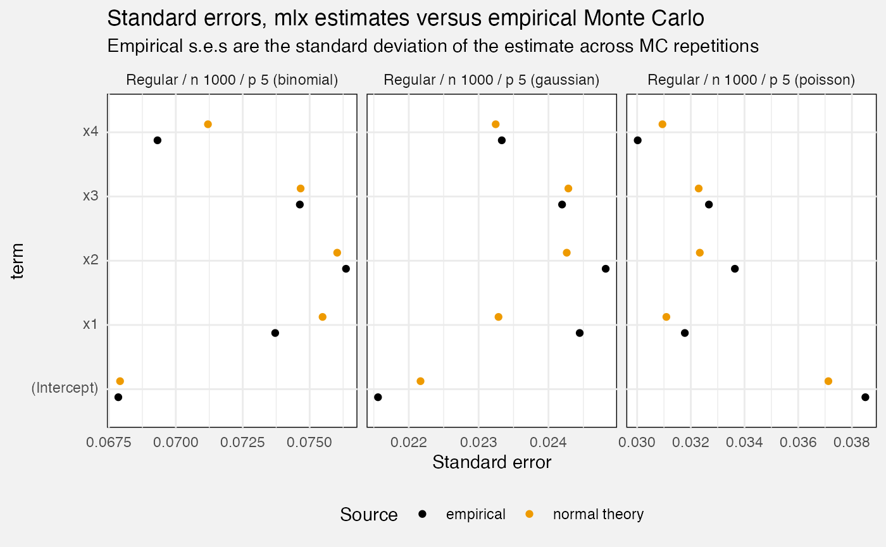
mlxs_glmnet
Deterministic tests
fuzz_glmnet_det <- latest(fuzz) |>
filter(suite == "mlxs-glmnet-deterministic") |>
select(-suite, -case_type, -nreps, -(rank:bootstrap_B))We measure prediction accuracy against a test set, with the oracle being the true d.g.p. (i.e. if you know that, how well do you predict the test set?) We compare glmnet::glmnet as a reference.
fuzz_glmnet_det |>
filter(target == "prediction", measure == "loss") |>
mutate(
`Lambda index` = as.factor(lambda_index),
Source = replace_values(source, "oracle" ~ "True d.g.p.", "reference" ~ "glmnet")
) |>
ggplot(aes(y = Scenario, x = value, colour = Source, shape = `Lambda index`)) +
geom_point(position = position_dodge2(0.75, padding = 0.2)) +
facet_grid(cols = vars(family), scales = "free_x") +
scale_x_log10() +
scale_colour_manual(values = c("True d.g.p." = "black", "mlx" = "orange",
"glmnet" = "seagreen")) +
theme(legend.position = "bottom", legend.box = "vertical") +
labs(
x = "Loss (log scale)",
title = "Prediction error (mse or loglikelihood) on test set"
)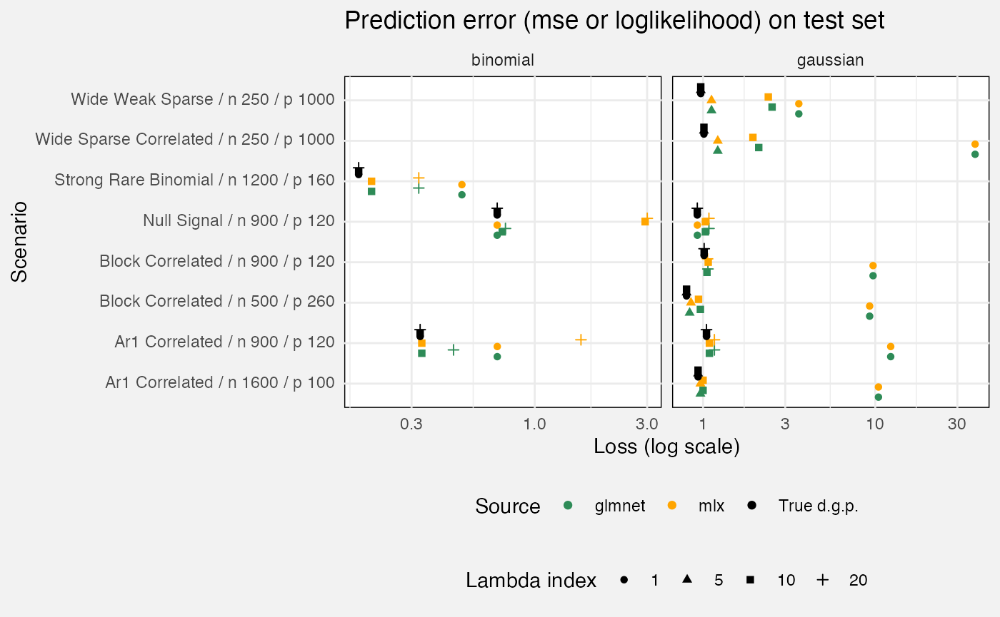
We also check values of our objective function (within the training set). If we do worse than glmnet (positive values of e.g. 0.1 or more) that suggests we should check performance of the algorithm - we’re not maximizing what we are trying to maximize.
fuzz_glmnet_det |>
filter(measure=="delta", target=="objective") |>
mutate(
`Lambda index` = as.factor(lambda_index),
better = value <= 0
) |>
ggplot(aes(y = Scenario, x = value, shape = `Lambda index`, colour = better)) +
geom_vline(xintercept = 0, linetype = "dashed", colour = "grey30") +
geom_point(position = position_dodge2(0.5)) +
facet_grid(cols = vars(family), scales = "free_x") +
scale_colour_manual(values = c("TRUE" = "green4", "FALSE" = "red"),
guide = "none") +
theme(legend.position = "bottom") +
labs(
x = "Objective delta",
title = "Achieved objective delta against glmnet::glmnet",
subtitle = paste0("The objective to minimize is training loss plus a lambda penalty.\n",
"Positive values: worse than glmnet; negative: better.")
)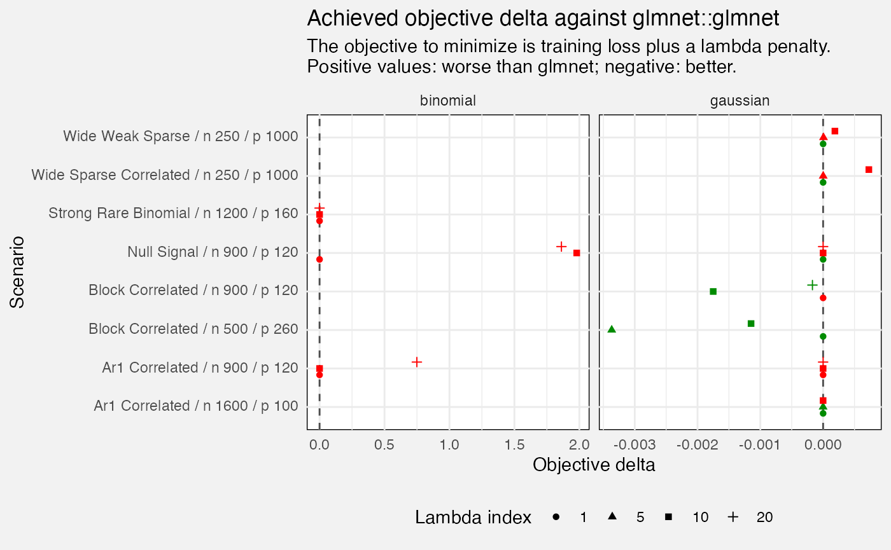
Lastly, we measure precision and recall of the active set (i.e. variables with a non-zero beta).
- Precision: out of all variables identified by the fit as active, what proportion were truly active?
- Recall: out of all truly active variables, what proportion were correctly identified?
fuzz_glmnet_det |>
filter(target %in% c("support_precision", "support_recall")) |>
mutate(
Target = prettify(target),
Scenario = paste0(prettify(scenario), " (", family, ") / n = ", n, " / p = ", p),
`Lambda index` = factor(lambda_index)
) |>
ggplot(aes(y = Scenario, x = value, colour = `Lambda index`)) +
geom_point(position = position_dodge(width = 0.5)) +
facet_wrap(vars(Target)) +
theme(legend.position = "bottom")## Warning: Removed 15 rows containing missing values or values outside the scale range
## (`geom_point()`).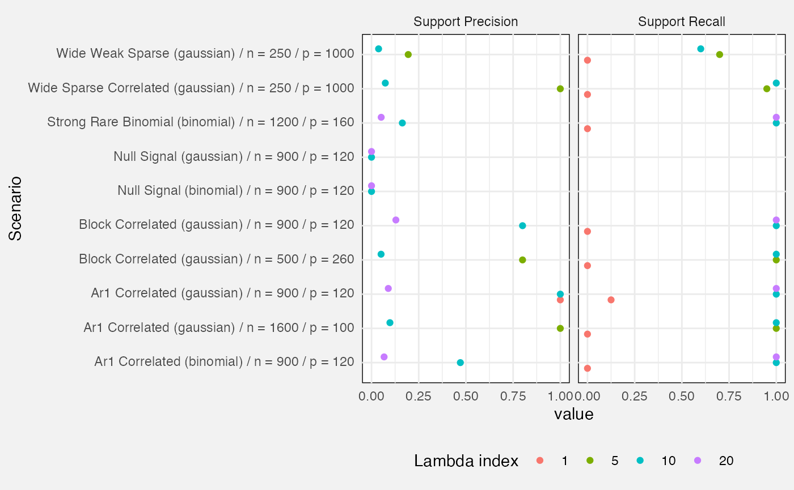
We also examine quality of predictions for an out-of-sample test
set.The loss statistic is mean squared prediction error for Gaussian
fits, or mean binomial negative log-likelihood for binomial fits. We
compare against glmnet::glmnet() as a reference
implementation, and also the “oracle” which is the true data-generating
process (hence the best possible prediction in expectation).
cols_glmnet <- c("Mlx" = "orange", "Reference" = "grey50", "Oracle" = "black")
fuzz_glmnet_det |>
filter(measure == "loss") |>
# oracle loss is the same at all values of lambda so let's avoid overplotting
filter(source != "oracle" | lambda_index == 1) |>
mutate(
Source = prettify(source),
Source = fct_relevel(Source, "Mlx", "Reference", "Oracle"),
np = paste("n =", n, "/", "p =", p)
) |>
ggplot(aes(y = Source, x = value, colour = Source, shape = factor(lambda_index))) +
geom_point(position = position_dodge(width = 0.5)) +
facet_grid(rows = vars(prettify(scenario), np), cols = vars(family),
scales = "free_x", axes = "all_x") +
scale_y_discrete(labels = \(x) sprintf(
"<span style='color:%s'>%s</span>", cols_glmnet[x], x)) +
scale_colour_manual(values = cols_glmnet, guide = "none") +
theme(
legend.position = "bottom",
legend.box = "vertical",
strip.text.y = element_text(size = 7, face = "bold")
) +
labs(
x = "Loss",
colour = "Source",
shape = "Lambda index"
)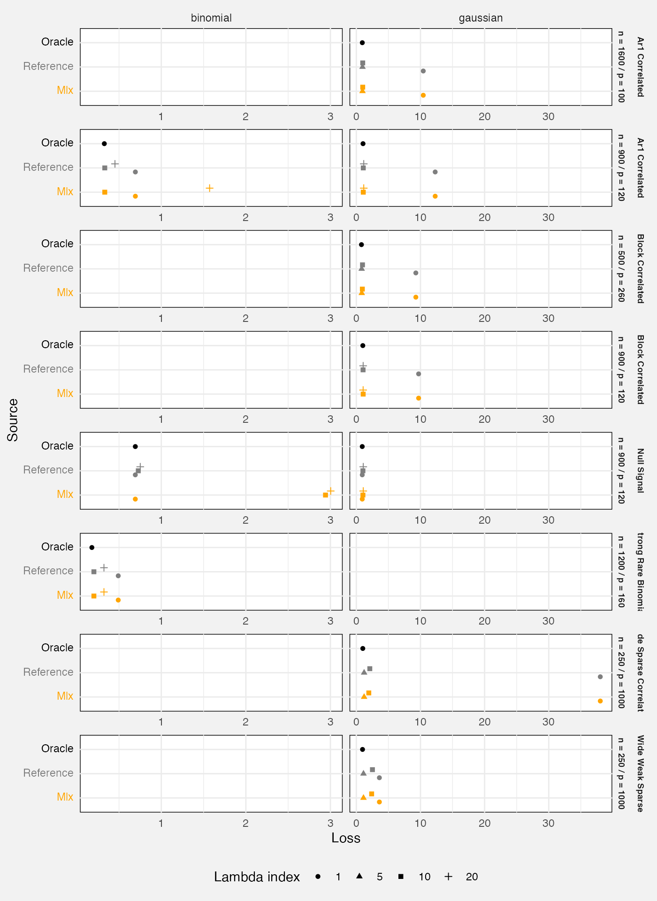
Monte Carlo tests
fuzz_glmnet_mc <- latest(fuzz) |>
filter(suite == "mlxs-glmnet-monte-carlo") |>
select(-suite, -case_type, -(rank:term))These are only run on the “full” tier.
if (tier == "full") {
fuzz_glmnet_mc |>
filter(target == "prediction") |>
mutate(
Source = replace_values(source, "reference" ~ "glmnet")
) |>
ggplot(aes(y = Source, x = value, colour = Source)) +
geom_pointrange(aes(xmin = value - 1.96 * value_se,
xmax = value + 1.96 * value_se)) +
scale_colour_manual(values = c("mlx" = "orange", "glmnet" = "seagreen")) +
coord_cartesian(xlim = c(0, 0.05)) +
labs(
title = "Prediction loss for mlxs_glmnet and glmnet",
subtitle = paste(fuzz_glmnet_mc$nreps[1], "Monte Carlo reps. Lines show Monte Carlo s.e.s"),
x = "Loss"
)
}
mlxs_cv_glmnet
fuzz_cv_glmnet_det <- latest(fuzz) |>
filter(suite == "mlxs-cv-glmnet-deterministic") |>
select(-(branch:case_type), -nreps, -(lambda_index:nfolds), -(rank:term))We compare mlxs_cv_glmnet() to the reference
glmnet::cv.glmnet(). Errors are:
-
out_of_fold_prediction: maximum absolute difference for out-of-fold predictions -
cv_loss: maximum absolute difference ofcvm, the cross-validated error for each value of lambda -
cv_loss_se: maximum absolute difference ofcvsd, the estimated s.e. ofcvm - Absolute differences in
lambda_minandlambda_1se
fuzz_cv_glmnet_det |>
filter(measure == "error", target == "out_of_fold_prediction") |>
ggplot(aes(y = Scenario, x = value)) +
geom_point() +
labs(
title = "Out of fold predictions of mlxs_cv_glmnet versus glmnet::cv.glmnet",
x = "Max. difference",
y = ""
)
fuzz_cv_glmnet_det |>
filter(measure == "error", target != "out_of_fold_prediction") |>
ggplot(aes(y = Target, x = value)) +
geom_vline(xintercept = 1e-5, linetype = "dashed", colour = "grey30") +
geom_point() +
facet_wrap(vars(Scenario)) +
scale_x_log10(labels = scales::label_math(format = log10)) +
labs(
title = "Statistics of mlxs_cv_glmnet versus glmnet::cv.glmnet",
x = "Value (log scale)"
)## Warning in scale_x_log10(labels = scales::label_math(format = log10)):
## log-10 transformation introduced infinite values.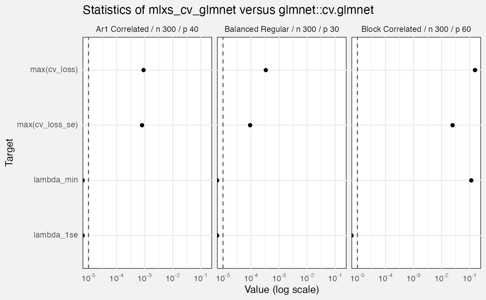
mlxs_prcomp
Deterministic tests
fuzz_prcomp_det <- latest(fuzz) |>
filter(suite == "mlxs-prcomp-deterministic") |>
select(-suite, -family, -(nreps:lambda), -bootstrap_B, -term) Scenarios are designed to test hard cases.
- Some test the exact path, some the randomized pca path
- They vary by n, p, rank (of the pca), true rank of the data, and by noise which is added to the “systematic” part of the x (so it won’t be exactly the true rank matrix)
Metrics include:
-
pca_sdev: max error compared to thestats::prcompreference, and rmse against the reference. sdev is the standard deviations of the principal components/the square roots of the eigenvalues of the covariance matrix. - subspace error compared to the reference; the Frobenius distance between matrices.
- reconstruction loss (of the original variables) and delta to the reference
- explained variance error, max. delta to the reference. this is also
a statistic from the
sdevs. - we record one “metamorphic” case type; not sure why just for this case but anyway I ignore it here as it is more “diagnostic”.
- Need to think about which of these are indicating problems!
fuzz_prcomp_det |>
filter(measure != "diagnostic", Target != "reconstruction",
case_type != "metamorphic") |>
mutate(
Rank = paste0("Rank ", rank, " (true ", rank_true, ", noise ", noise_sd, ")")
) |>
ggplot(aes(y = Target, x = value, colour = method)) +
geom_vline(xintercept = 1e-5, linetype = "dashed", colour = "grey30") +
geom_point(position = position_dodge2(width = 0.5)) +
facet_wrap(vars(Scenario, Rank), axes = "all_x", scales = "free_x", ncol = 2) +
scale_x_log10(labels = scales::label_math(format = log10)) +
labs(
title = "Error metrics for `mlxs_prcomp`",
subtitle = "Reference is `stats::prcomp`",
x = "Error (log scale)",
colour = "PCA Method"
) +
theme(
legend.position = "bottom"
)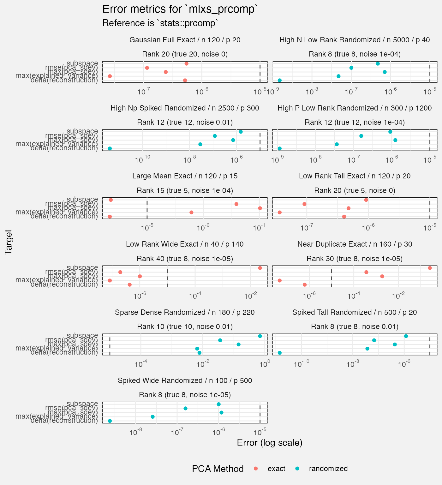
Monte Carlo tests
- These have only 12 reps which seems few. Is the Monte Carlo actually buying us anything here? We never use it to estimate standard errors.
- As with deterministic case, seems to struggle with “sparse dense”.
fuzz_prcomp_mc <- latest(fuzz) |>
filter(suite == "mlxs-prcomp-monte-carlo") |>
select(-suite, -case_type, -family, -(alpha:lambda), -bootstrap_B, -term)
fuzz_prcomp_mc |>
filter(measure != "diagnostic", Target != "mean(reconstruction)") |>
mutate(
Rank = paste0("Rank ", rank, " (true ", rank_true, ", noise ", noise_sd, ")")
) |>
ggplot(aes(y = Target, x = value)) +
geom_vline(xintercept = 1e-5, linetype = "dashed", colour = "grey30") +
geom_point(position = position_dodge2(width = 0.5)) +
facet_wrap(vars(Scenario, Rank), axes = "all_x", scales = "free_x", ncol = 2) +
scale_x_log10(labels = scales::label_math(format = log10)) +
labs(
title = "Error metrics for mlxs_prcomp Monte Carlo tests",
subtitle = "Reference is stats::prcomp",
x = "Error (log scale)"
)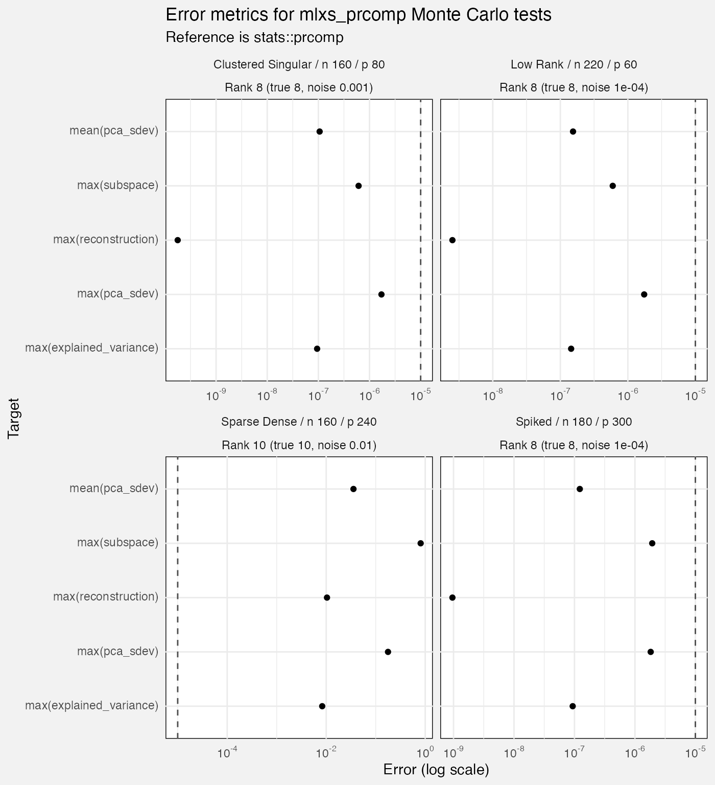